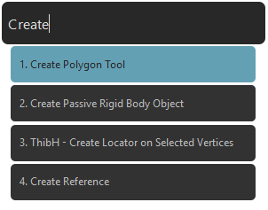
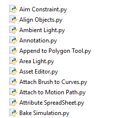

Features¶
Execute Maya commands by typing them¶
Helios comes with hundreds of pre-built python commands. Not only can you create objects, you will also be able to open windows such as the UV Editor, the Outliner or enter any Maya tool (Multi Cut Tool, Create Polygonal Tool...). There are more than 500 commands included by default with Helios.
Custom commands included¶
Helios comes with some commands which were built specifically to save you time. These commands are not available by default in Maya and are small python scripts that will help you work faster.
Some of the custom commands included are:
- Fill Selection.
- Move Pivot to Selected Vertices.
- Create Joints from Locators.
- Snap Object to Center of the World.
Make Helios work the way you want¶
You can make Helios yours and custom it to your needs. Each command is its own python script so it’s really easy to add more commands and customize existing ones.
To add a command, just create a ‘name_of_command.py’ file with the python script you want to execute inside it. If you want to create an advanced command, just add ‘-advanced’ after the name of the command (that is, just before the .py extension) and Helios will recognize that there is an advanced command. To execute the advanced command in place of the default one, press Ctrl + Enter.
